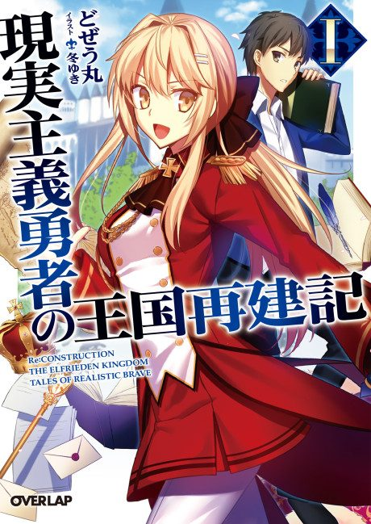

How a Realist Hero Rebuilt the Kingdom
現実主義勇者の王国再建記
After the anime, read the light novel from Volume 5.
7.1AniList score
—Animeter, no votes yet
26episodes, 2 seasons
Anime finished. Where does the story go next?
Start at Volume5
Part 2 ends at the end of light novel volume 4; start at volume 5.
12420 end
How a Realist Hero Rebuilt the KingdomHow a Realist Hero Rebuilt the Kingdom Part 2Start reading here